This article is the second in a series of articles focusing on Microsoft 365 basics. It explains what the Microsoft home page contains and how you can use it. If you are a new Microsoft 365 user, the information presented can be quite a handful. This article tries to break it down for you.
Note: To find out how to sign up with Microsoft 365 and what subscription to choose, refer to this article: Signing up with Microsoft 365 .
Microsoft 365 home page presents an eagle-eye view of all the features packaged into the Microsoft 365 edition you have purchased. It makes it easy for you to get used to what’s on offer so that you use them to the fullest. More importantly, you’ll get access to almost everything (like MS Word, PowerPoint, Microsoft Teams, and more) from this page. So, it’s important to educate yourself about the Microsoft 365 home page.
Visit login.microsoftonline.com website and enter your Microsoft 365 login credentials. If you enter your credentials correctly, you’ll get to the Microsoft 365 home page as shown in
Figure 1. Take a moment to observe the information being presented to you.
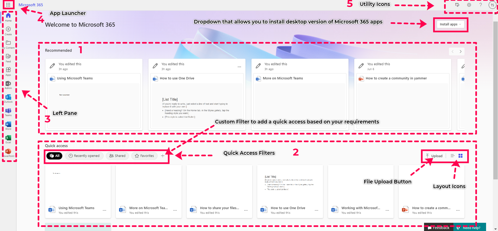It’s quite simple to use – once you get to know it well. But since Microsoft 365 is a huge platform, getting to know its home page takes time. This is where this article can be helpful – in helping you understand it quickly through images and easy-to-read explanations. And if you are the watch-and-learn type, there’s a video at the bottom of this article which you can skip to right now.
The Microsoft 365 home page is split into 5 sections:
Note: This article focuses only on sections (1) and (2). The (3), (4), and (5) are discussed here.
This section makes recommendations based on your activity. First up, you’ll get recommendations from Microsoft. Once you start using Microsoft 365, these recommendations change to cater to your needs. For example, the following files can get listed in this section:
Note: Just above the Recommended section, you have the Install Apps dropdown to your right as shown in Figure 2. Using this you can install Microsoft 365 apps like Word, Excel, PowerPoint, and more as your desktop apps. You can also set a different language or install other apps (other than what’s available in your Microsoft 365 edition) from this dropdown.
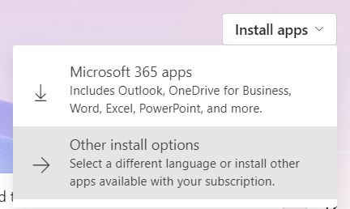The simplest way is to click the file. Doing so opens the file – be it Word, Excel PowerPoint, etc. – in a new tab and you can start working on it. But remember there are more features at your disposal since Microsoft 365 is a cloud-powered work collaboration tool. To find out what more you can do with the files in the recommended list, just hover over them and click on the three dots icon that appears.
The three dots icon presents you with the options shown in Figure 3.
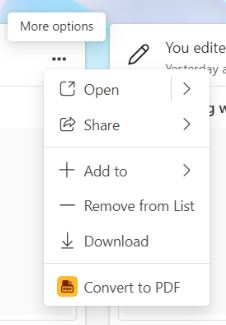Options available within the Open option are shown in Figure 4.
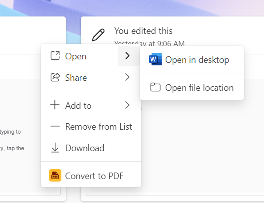Email: Selecting the Email option opens up a dialog box as shown in Figure 6. Enter the recipient's name, group's name or email address to share the file. You can also copy the link to the file on your own and share it by some other means like chat in Microsoft Teams.
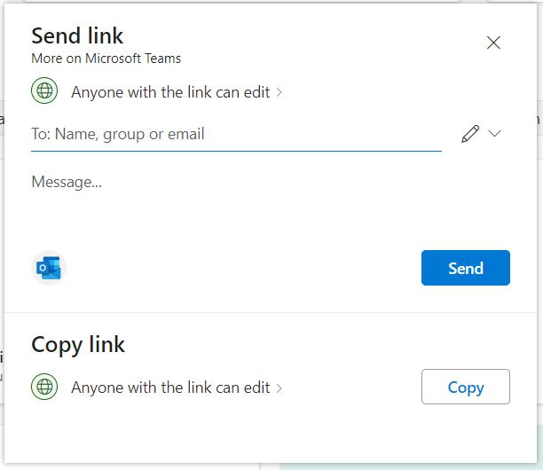Copy Link: Selecting the Copy Link option opens a dialog box as shown in Figure 7. Click the Copy button to copy the generated link for sharing the file and share it with the desired individual, group, or team.
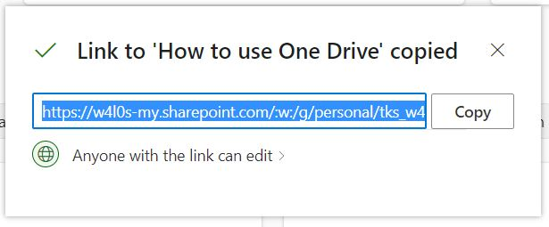Note: Anyone with the link to your shared file can edit it by default. To change this and set permission levels to your file, click Anyone with the link can edit link. Doing so opens up the Sharing settings dialog box as shown in Figure 8. Customize the Sharing settings to suit your requirements – like sharing it with only the MSFT community, password protecting your file, blocking downloads, etc., - and click Apply button.
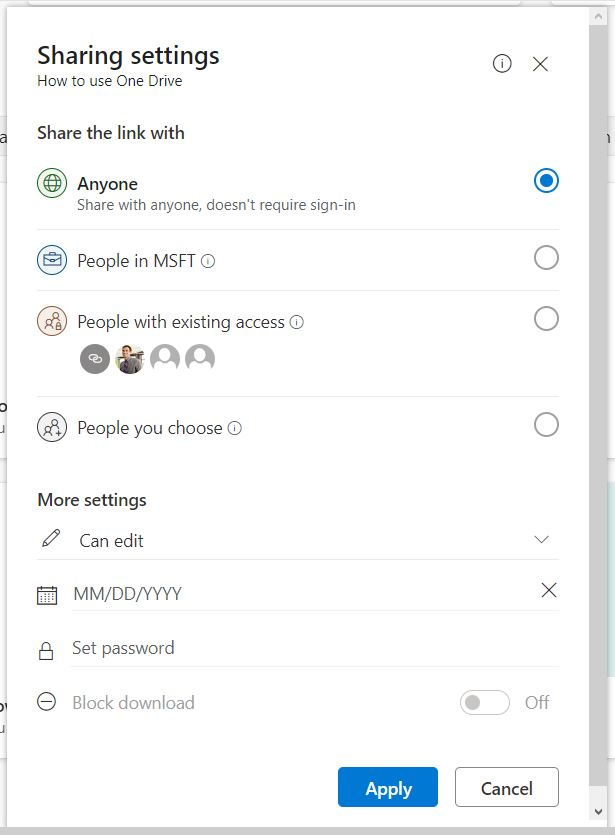Teams: Selecting the Teams option opens a dialog box as shown in Figure 9. Type in the name of the Microsoft Team you wish to share the document with and click the Share button.
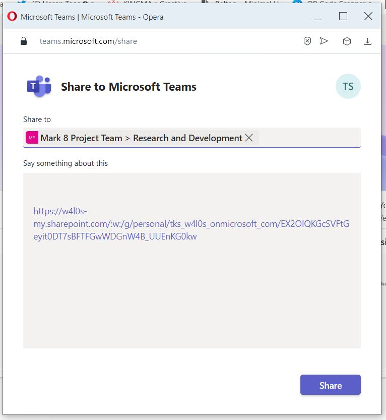Note: You can navigate through your recommended list using the arrow keys present at the top right corner.
The quick access section lets you access files based on specific criteria like files you recently opened, files shared with you, and files you marked as favorites, etc., You can also create custom filters to suit your requirements.
By default, all the files get listed. These include the files you created, the ones shared with you, the ones you shared with others, the files you recently accessed, etc. This is because the All filter is turned on by default. The other 3 filters are:
Note: Just like in the recommended list, here too you have more options (the three dots icon). The more options here have an additional Favorite option that lets you mark files as your favorite.
Click the more options (the three dots icon) and select the Favorite option as shown in Figure 10.
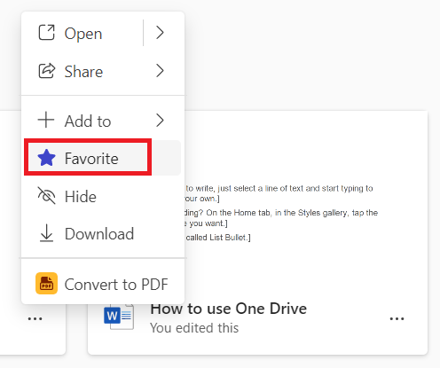Note: Once you add the file to your favorites list, you can access it by clicking the Favorites filter.
Click the more options (the three dots icon) and select the Unfavorite option as shown in Figure 11.
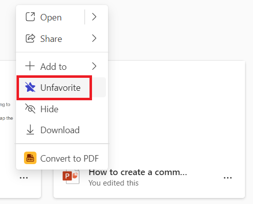Note: Once you remove the file from your favorites list, it will no longer appear in your Favorites list.
Click the + button beside Favorites. Doing so opens Add a content filter setting as shown in Figure 12.
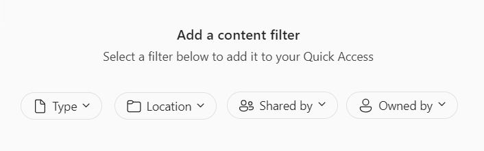You have four filtering options to choose from:
Note:When you configure a filter, it takes the name of the filter you set (for example, Word as shown in Figure 13) and becomes available as a tab. You can remove it anytime by clicking the close button and confirming the deletion.
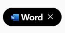To the right of the quick access filters, you’ll notice 3 additional buttons:
Below the Quick access section, almost hidden from your eyesight is the See all My Content link. When clicked, all your content opens in a separate tab as shown in Figure 14. This section can prove more efficient than the Quick access filters because it has a ‘search by keyword’ option for searching your files. It is also equipped with a more comprehensive filter. Both the search bar and the filter are present to the right of your screen.
Note:Skip the topmost Search bar for now. We’ll dive deep into that in the next article. For now, let’s just focus on the file-specific search present to your right.
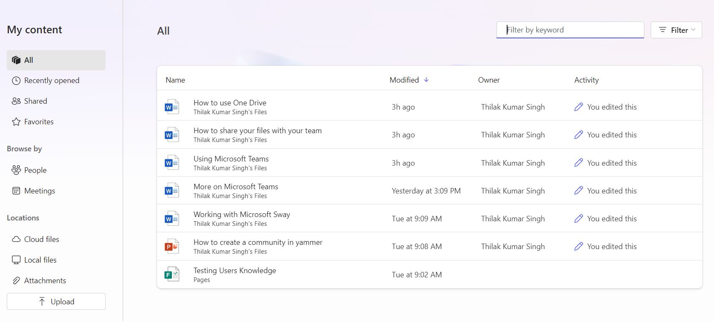Type: Lets you narrow down your search based on the file type like MS Word, Excel, PowerPoint, etc.
Activity: Options available here – shown in Figure 16 – can prove quite useful, as it lets you narrow down your search based on your activity or activity that points to you (like your mentions, tasks assigned to you etc).
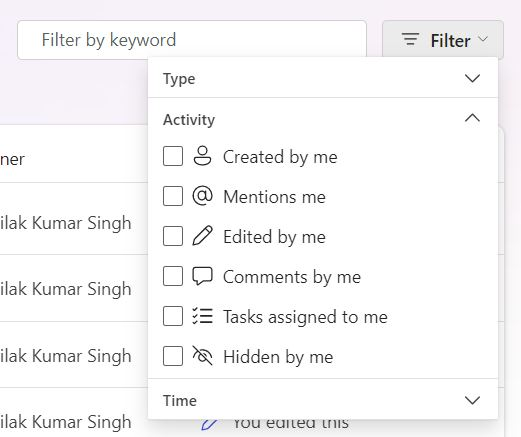Time: Lets you narrow down your search results to Yesterday, the Previous week and the Previous month.
With a massive cloud productivity app like Microsoft 365, it’s all about repetition. The more you use it, the better you get at it. So, explore the home page well now that you are a little familiar with what’s being displayed. In the next article, let’s dive deep into the left pane icons, apps launcher, the search bar and utility icons.
Video link: https://vimeo.com/841746507/3d14321be6?share=copy
© Your Site Name. All Rights Reserved. Design by HTML Codex